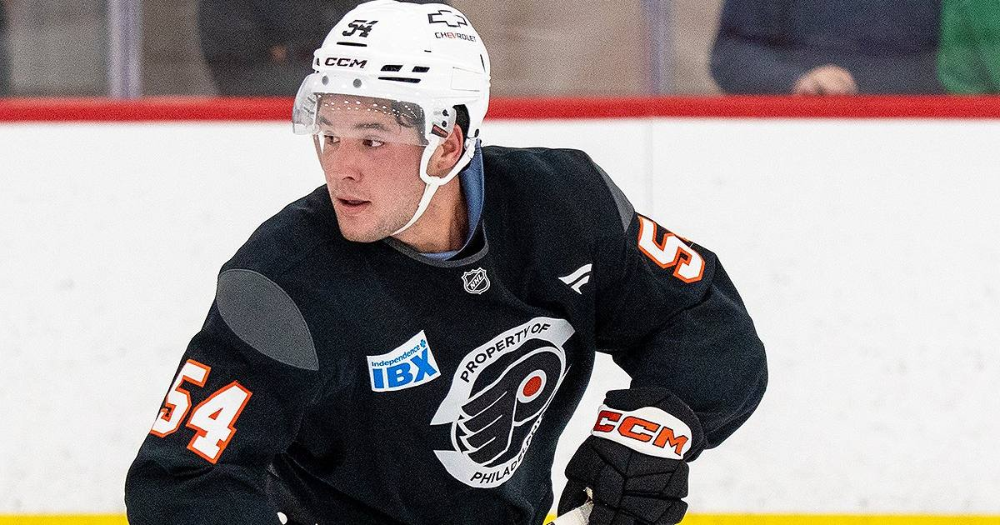

Cole Knuble Scores His First Two NHL Goals With Dad in the Building
Two goals in his second NHL game, with his father Mike Knuble — 1,068 NHL games, 338 in a Flyers sweater — watching from the stands. Philly's third straight win after an 0-6-3 start.

Some nights are scripted too well to believe.
Cole Knuble scored the first two goals of his NHL career Wednesday — in just his second career game — lifting the Philadelphia Flyers to a 3-1 win over the Buffalo Sabres. His father, former NHL forward Mike Knuble, watched from the stands and joined him for the postgame interview on TNT.
The night
Knuble opened the scoring at 14:49 of the first, burying a rebound of an Oliver Bonk shot on his backhand. Trevor Zegras batted a rebound out of the air for a power-play goal 43 seconds before intermission. After Jason Zucker cut it to 2-1 on the power play in his season debut, Knuble banked one off Ukko-Pekka Luukkonen from behind the goal line at 3:03 of the third to seal it.
"I think I blacked out during the first one," Knuble said afterward. "I've been dreaming about that my whole life."
Mike Knuble played 1,068 NHL games with five teams — including 338 with the Flyers. "It's crazy," his son said. "I've been a fan of this team my whole life."
The bigger picture
The win was Philadelphia's third straight after an 0-6-3 start — and the Flyers scored three goals in each of those wins after failing to reach three in any of their first nine. Dan Vladar made 27 saves. For Buffalo, captain Rasmus Dahlin returned after missing four games with an upper-body injury.
Sources: AP via theScore · Reuters
Gear up: Sports category post → [Fanatics](https://fanatics.93n6tx.net/WOLjqe): via Fanatics